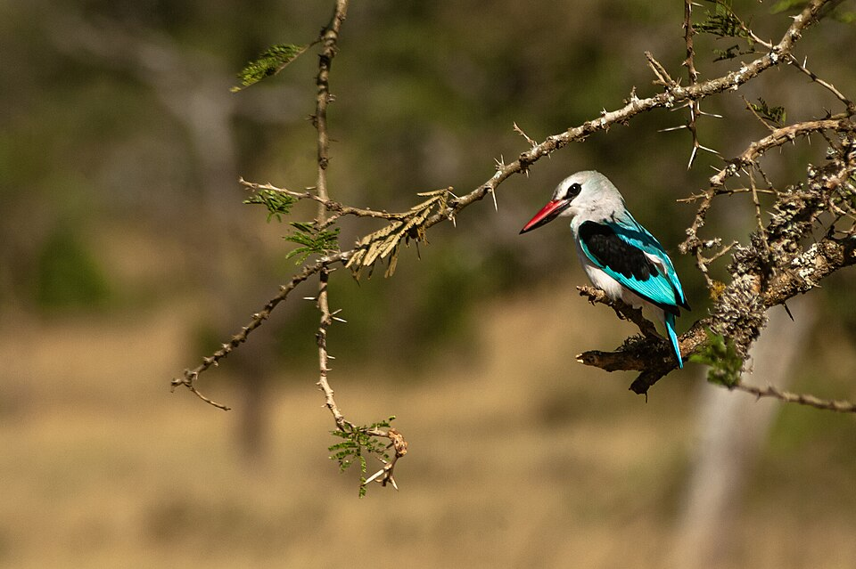
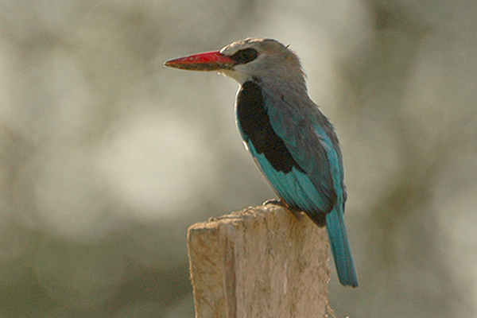

Observe Carefully
Use patience and quiet observation to notice bird behavior, calls, flight patterns, and habitat.
Explore • Observe • Protect
Discover local birds, learn how to identify them, explore responsible bird watching practices, and record your own wildlife observations.
Explore Bird SpeciesStart Here
Use patience and quiet observation to notice bird behavior, calls, flight patterns, and habitat.
Stay on appropriate paths and avoid disturbing nests, eggs, young birds, and natural habitats.
Record the species, location, date, time, and weather conditions during your observations.
Featured

Different birds prefer different environments. Look for Woodland Kingfishers in open woodland, savanna, grassland, gardens, and areas with scattered trees. Murchison Falls National Park provides suitable habitat where these colorful birds can perch on exposed branches and search for food.

Woodland Kingfishers are easier to locate when you hear their harsh, rattling calls. Scan branches and shrubs in open woodland and along river edges when you hear a call.

Bright light, clear skies, and good visibility make it easier to spot a Woodland Kingfisher perched in open woodland. Plan your observation when the weather is calm and the sky is clear.
From Around the Web


Responsible Exploration